Objection to Planning Application 26/1138/HSE
Proposed rear extension at 89 Lichfield Grove, London N3 2JL
I am formally objecting to Planning Application 26/1138/HSE as the owner of the neighbouring property, No. 91. We have lived here for almost 31 years. This page sets out that objection in full, with the supporting plans, photographs and policy references that the planning portal's comment form does not have room for.
(neighbouring property, 31 years)
Key to labelled openings at No. 91
- A Living Room French Doors
- B C Kitchen-Diner windows
- D Toilet window
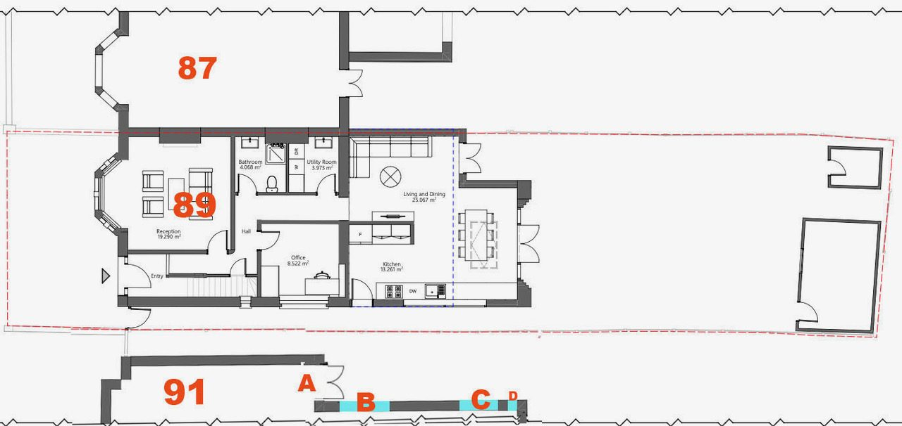
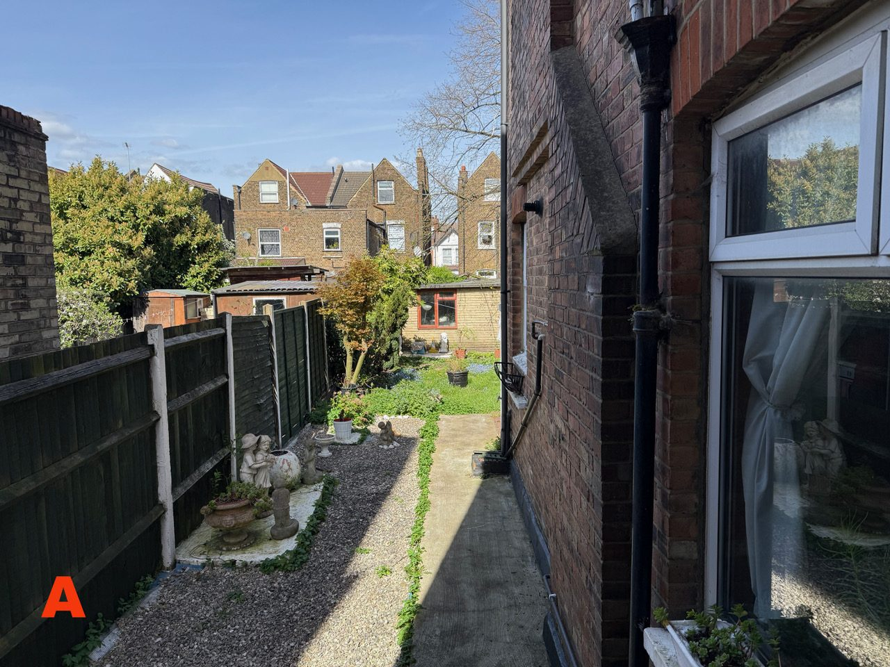
An extension that already exceeds policy
No. 89 has already undergone a large, full-width extension measuring 4.0 metres in depth — exceeding Barnet's 3.5 metre SPD guideline. It is out of character and out of proportion to the main building, and already dominates the adjoining property at No. 91.
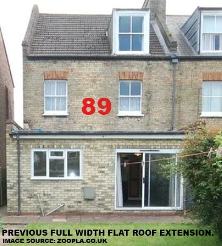
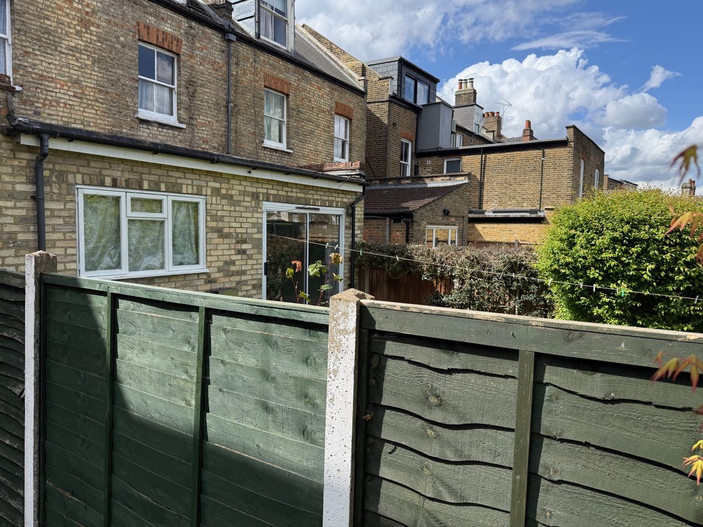
Loss of daylight and outlook to a primary habitable room
Our outrigger at No. 91 contains the kitchen-diner — a primary habitable room in which we spend a substantial amount of time. At the rear of the outrigger is a toilet (D), so the kitchen-diner receives no natural light from that direction. Its only meaningful source of daylight and outlook is therefore the two flank windows facing No. 89 (B & C).
One of those windows is already largely obscured by the existing side wall of No. 89 (B). That leaves only a single window with any real open outlook (C) — and the proposed extension would block that remaining window.
The result would not be a minor or technical change, but a very substantial loss of outlook and an overbearing impact on what is currently the sole remaining source of unobstructed natural light to this habitable room. In practical terms, it would leave the kitchen-diner with no meaningful outlook at all.
The photographs below were taken looking straight out of each window — they show exactly what daylight and outlook the kitchen-diner currently has.
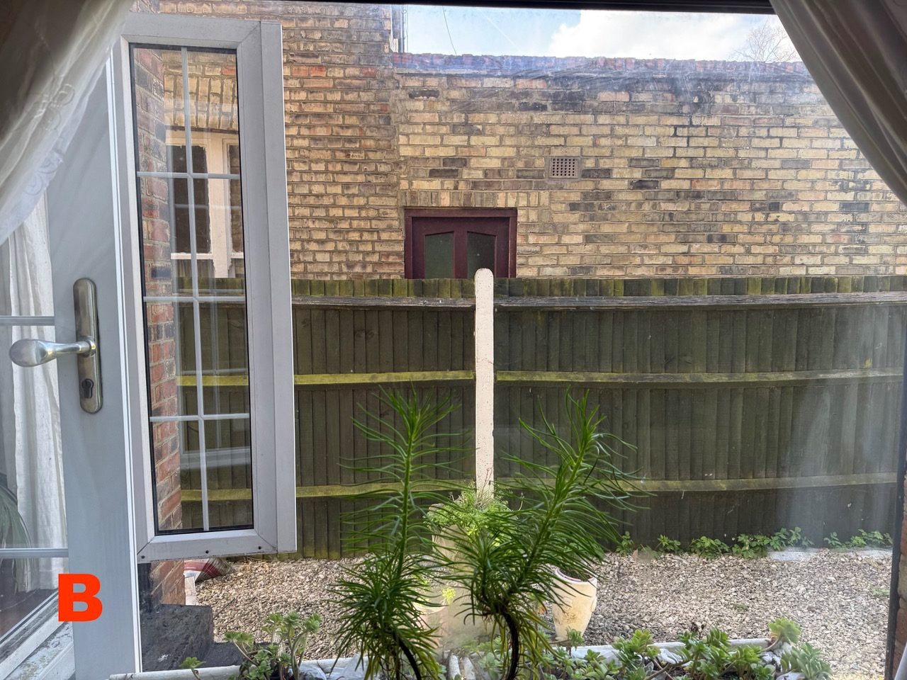
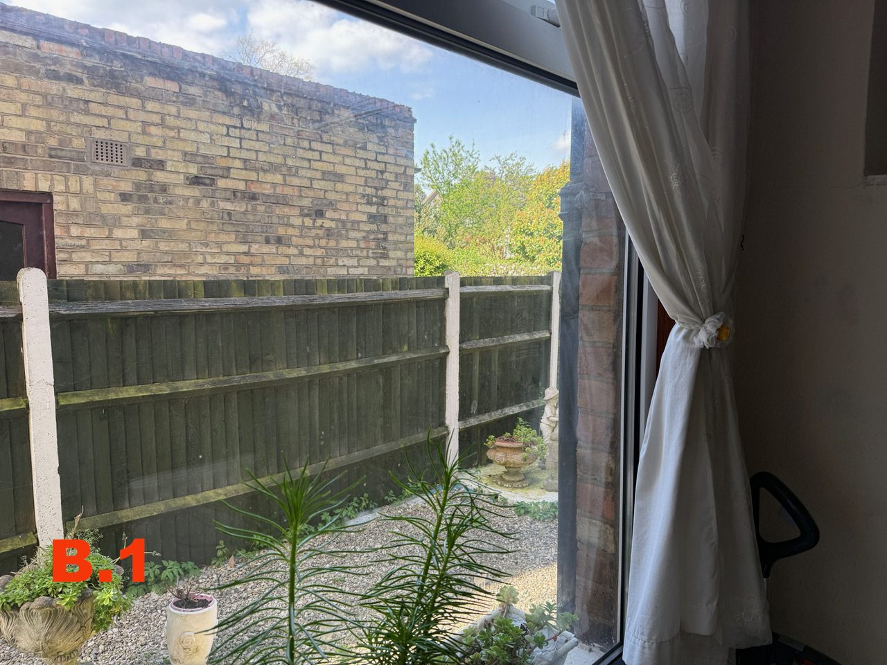
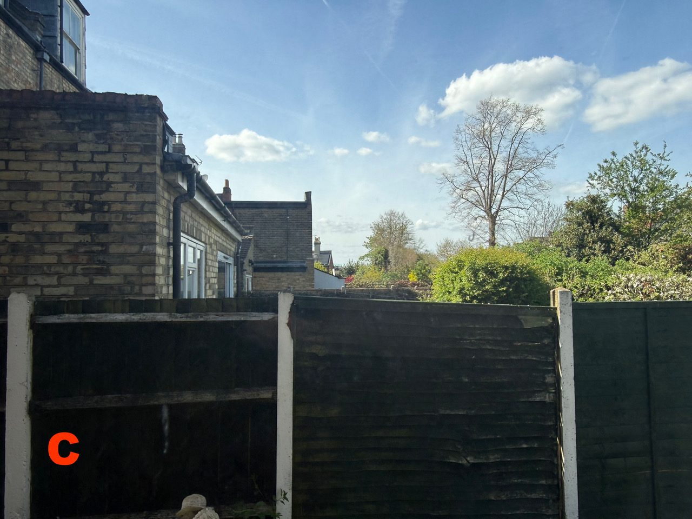
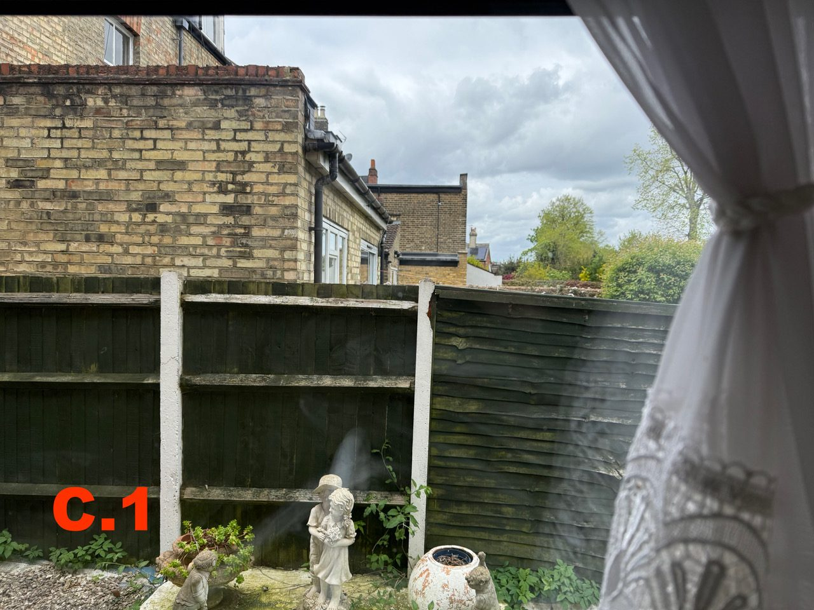
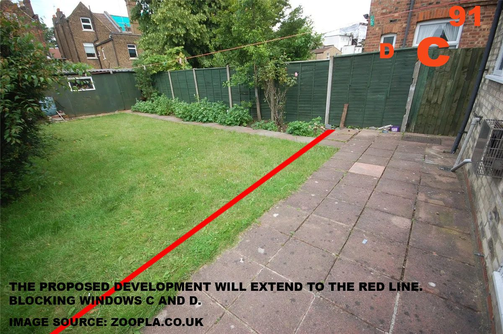
Policy basis
- Policy CDH05 — Barnet Local Plan (2025) requires development to avoid significant adverse impacts on neighbouring sunlight and daylight.
- SPD paras 14.21–14.27 — the Residential Design Guidance SPD (2016) makes clear that the effect on neighbouring amenity must be assessed properly and holistically, not by reference to depth alone.
- Policy D3 — the London Plan (2021) likewise requires development to safeguard the amenity of neighbouring occupiers, including outlook and daylight.
Here, where one window is already compromised and the other is the only remaining source of unobstructed light and outlook to a habitable room, the proposed extension fails that test.
Enclosure and overbearing impact
The existing extension, together with the proposed extension, would create a combined structure 6.8 metres deep — nearly double Barnet's 3.5 metre SPD benchmark for semi-detached properties (see depth comparison ↑). This would extend along the full length of our property, creating a box-like feature which would cause an oppressive sense of enclosure and an unacceptable overbearing impact on amenity.
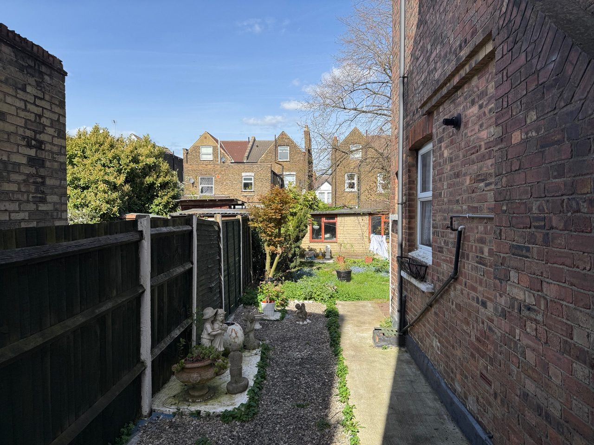
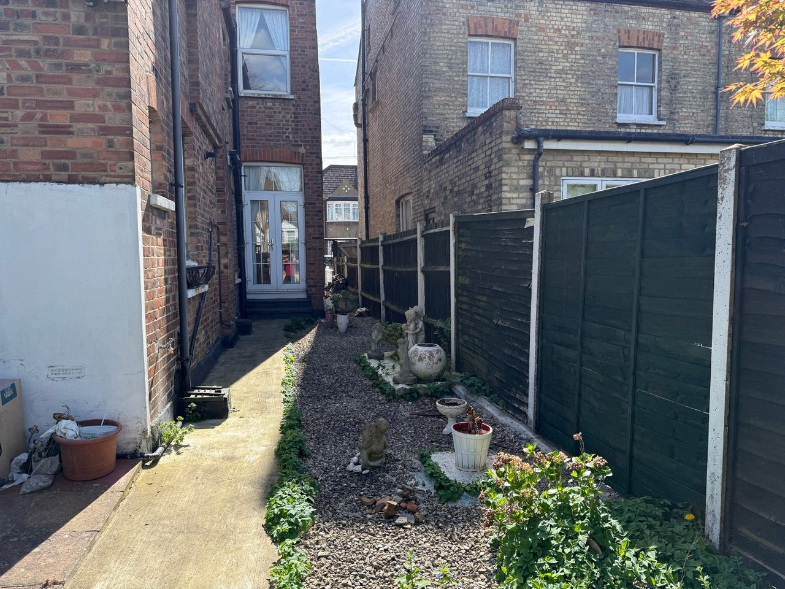
Privacy
A window is to be located on the side of the proposed extension, approximately 3.6 metres from windows B and C of our kitchen-diner. This would impact our privacy, comfort and sense of well-being.
Plan extract annotated with the 3.6 m distance between the proposed window and windows B/C.
Assessment gap
Concerning daylight & outlook, enclosure, and privacy alike: no information has been submitted, nor any plans showing the impact of the proposed extension on No. 91. The impact on our home cannot have been properly assessed.
Out of character — a notched, overdeveloped form
The proposed extension has been cut back at the western corner so as to mitigate harm to the neighbouring amenity of No. 87. This reflects overdevelopment of the site rather than a coherent or well-resolved design solution.
The design leaves a notched footprint that is out of character with the property and the surrounding area. Rather than resolving one harm, the design creates another. The scale, mass and bulk of this extension cannot sit harmoniously within the plot.
Plan: the proposed footprint showing the cut-back corner / "notch" near No. 87.
Policy compliance summary
The proposal conflicts with the following policies, both individually and cumulatively:
| Policy | Source | Why the proposal conflicts |
|---|---|---|
| CDH05 | Barnet Local Plan (2025) | Establishes criteria for residential extensions; the proposal causes significant loss of daylight and outlook to a primary habitable room. |
| CDH02 | Barnet Local Plan (2025) | Requires protection of residential amenity — overshadowing, blocked daylight, reduced sunlight, loss of privacy and loss of outlook are all engaged here. |
| CDH01 | Barnet Local Plan (2025) | Requires development to respect the character and appearance of the existing building and surrounding area; the excessive scale, bulk and "notched" design fail this. |
| SPD 14.21–14.27 | Residential Design Guidance SPD (2016) | Amenity impact must be assessed holistically, not by depth alone — no such assessment has been provided for No. 91. |
| D3 | London Plan (2021) | Requires safeguarding of neighbouring occupiers' amenity, including outlook and daylight. |
In particular, the proposal fails to: safeguard neighbouring amenity through the significant loss of daylight and outlook, the creation of an overbearing sense of enclosure, and harmful impacts on privacy; avoid overdevelopment of the site, as evidenced by the need to cut back part of the extension to mitigate harm elsewhere; and respect the character and appearance of the existing building and surrounding area.
Planning history — the HMO appeal context
There is currently a live appeal relating to the use of this property as an HMO (Appeal Ref: 6005972; Application Ref: 25/3158/FUL). In that application, the scale of the extension was justified as providing additional communal space for an 8-person, 7-bedroom HMO.
This current application, 26/1138/HSE, removes any reference to HMO use and instead presents the property as a 4-bedroom single-family dwelling. However, the design layout remains largely identical to the previous HMO application.
From the Architect's HMO Appeal Design & Access Statement
"In practice, bringing the property up to a standard that would properly support contemporary family living would require significant reconfiguration and design intervention."
"Optimising the property for family use would necessitate combining bedrooms to form fewer but larger rooms, enlarging and rationalising communal areas, and reworking the outdoor space to provide practical family amenity."Design and Access Statement, para. 8.14 — Appeal 6005972 / App. 25/3158/FUL
No such substantive "significant reconfiguration and design intervention" has been provided in the current application. The changes are limited to:
- Relabelling two bedrooms as offices, and another as a walk-in closet.
- Reducing one corner of the proposed extension.
It is therefore unclear whether the proposal represents a genuinely reconfigured family dwelling, or an HMO-style layout that has simply been relabelled for the purposes of this application. The proposal should be assessed on its own merits as a single dwelling — for which an extension of this scale appears unjustified.
Side-by-side floor plans: the HMO appeal scheme (25/3158/FUL) vs. the current application (26/1138/HSE).
Conclusion — objection and request for refusal
The proposal is contrary to Barnet's Residential Design Guidance SPD and Policies CDH01, CDH02 and CDH05 of the Barnet Local Plan, and fails to comply with Policy D3 of the London Plan (2021).
The extension would result in a dominant and intrusive form of development, causing unacceptable harm to neighbouring amenity and the character of the area. There is no need or justification for it.
I object to planning application 26/1138/HSE and respectfully request that planning permission be refused.